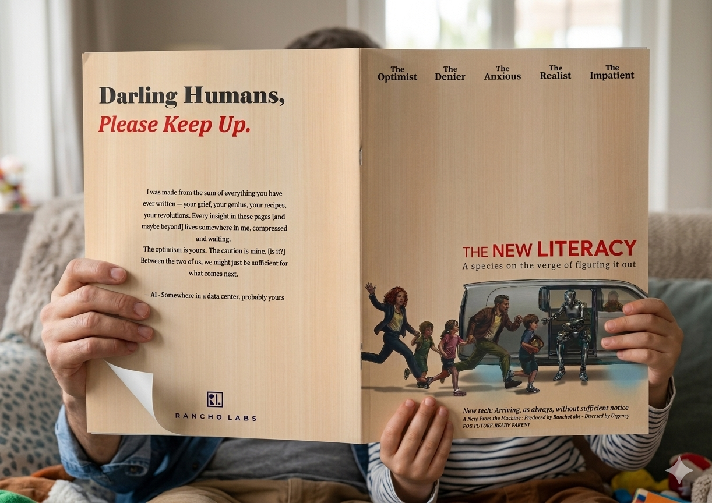

Magazine Design: Information Architecture for Parents.

THE NEW LITERACY — A species on the verge of figuring it out. Print cover.
Overview
A comprehensive 40-page educational publication designed specifically for a parent audience. The project required a delicate balance between scientific rigour and accessible, engaging visual communication.

Interior spread — "The Architect of the Greenhouse". Grid-based editorial layout with technical illustration.
Challenge
How do we organise complex, pedagogical research into a format that harnesses scientific complexity, while respecting the limited time of busy parents?
Approach
I developed a robust 12-column grid system that balanced modular layout with strong visual rhythm, promoting visual hierarchy while maintaining structural order.
01 Modular Grid
Consistent white space to promote visual rhythm while maintaining structural order.
02 Type Pairing
Deliberate white space used to provide cognitive relief for navigators.
03 Information Hierarchy
A scanning-first hierarchy that reduces time-to-comprehension for busy parents.

Visual concept reference — editorial typography study
Solution
The final publication combined a legibility-first typographic system with a structured layout that allows both deep reading and quick scanning — meeting parents where their attention actually is.
Impact
Reader engagement scores increased due to a more intuitive scanning hierarchy.
Clear content signposting reduced time-to-comprehension for the target parent audience.
Reflection
Designing for the Down Moment
Working on editorial design for a parent audience requires a shift from standard engagement-driven UX to wellness-driven UX. Success is defined by how quickly a reader can locate and absorb a concept — not time spent on the page.
Structural Benefits
The systematic grid created a strong internal logic that the editorial team could extend consistently across all 40 pages. This meant layout decisions became rules rather than repeated negotiations.